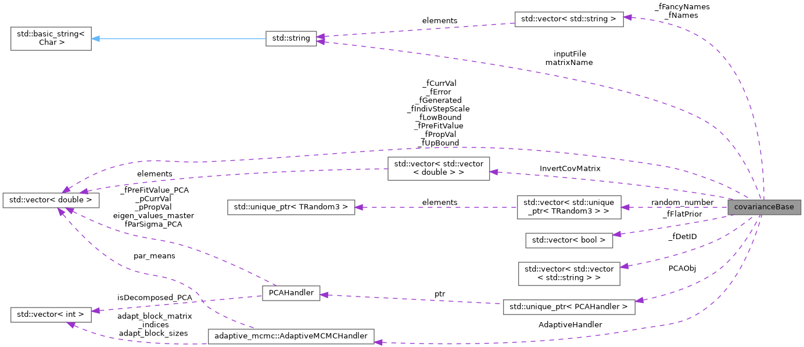

|
MaCh3 1.4.4
Reference Guide
|
Loading...
Searching...
No Matches
|
MaCh3 1.4.4
Reference Guide
|
Base class responsible for handling of systematic error parameters. Capable of using PCA or using adaptive throw matrix. More...
#include <covariance/covarianceBase.h>

Public Member Functions | |
| covarianceBase (const std::vector< std::string > &YAMLFile, std::string name, double threshold=-1, int FirstPCAdpar=-999, int LastPCAdpar=-999) | |
| ETA - constructor for a YAML file. | |
| covarianceBase (std::string name, std::string file, double threshold=-1, int FirstPCAdpar=-999, int LastPCAdpar=-999) | |
| "Usual" constructors from root file | |
| virtual | ~covarianceBase () |
| Destructor. | |
| void | setCovMatrix (TMatrixDSym *cov) |
| Set covariance matrix. | |
| void | setName (std::string name) |
| Set matrix name. | |
| void | setParName (int i, std::string name) |
| change parameter name | |
| void | setSingleParameter (const int parNo, const double parVal) |
| void | setPar (const int i, const double val) |
| Set all the covariance matrix parameters to a user-defined value. | |
| void | setParCurrProp (const int i, const double val) |
| Set current parameter value. | |
| void | setParProp (const int i, const double val) |
| Set proposed parameter value. | |
| void | setParameters (const std::vector< double > &pars={}) |
| Set parameter values using vector, it has to have same size as covariance class. | |
| void | setFlatPrior (const int i, const bool eL) |
| Set if parameter should have flat prior or not. | |
| void | SetRandomThrow (const int i, const double rand) |
| Set random value useful for debugging/CI. | |
| double | GetRandomThrow (const int i) |
| Get random value useful for debugging/CI. | |
| void | SetBranches (TTree &tree, bool SaveProposal=false) |
| set branches for output file | |
| void | setStepScale (const double scale) |
| Set global step scale for covariance object. | |
| void | setIndivStepScale (const int ParameterIndex, const double StepScale) |
| DB Function to set fIndivStepScale from a vector (Can be used from execs and inside covariance constructors) | |
| void | setIndivStepScale (const std::vector< double > &stepscale) |
| DB Function to set fIndivStepScale from a vector (Can be used from execs and inside covariance constructors) | |
| void | setPrintLength (const unsigned int PriLen) |
| KS: In case someone really want to change this. | |
| void | SaveUpdatedMatrixConfig () |
| KS: After step scale, prefit etc. value were modified save this modified config. | |
| void | throwParProp (const double mag=1.) |
| Throw the proposed parameter by mag sigma. Should really just have the user specify this throw by having argument double. | |
| void | throwParCurr (const double mag=1.) |
| Helper function to throw the current parameter by mag sigma. Can study bias in MCMC with this; put different starting parameters. | |
| void | throwParameters () |
| Throw the parameters according to the covariance matrix. This shouldn't be used in MCMC code ase it can break Detailed Balance;. | |
| void | RandomConfiguration () |
| Randomly throw the parameters in their 1 sigma range. | |
| int | CheckBounds () const _noexcept_ |
| Check if parameters were proposed outside physical boundary. | |
| double | CalcLikelihood () const _noexcept_ |
| Calc penalty term based on inverted covariance matrix. | |
| virtual double | GetLikelihood () |
| Return CalcLikelihood if some params were thrown out of boundary return LARGE_LOGL | |
| TMatrixDSym * | getCovMatrix () |
| Return covariance matrix. | |
| TMatrixDSym * | getInvCovMatrix () |
| Return inverted covariance matrix. | |
| double | GetInvCovMatrix (const int i, const int j) |
| Return inverted covariance matrix. | |
| double | GetCorrThrows (const int i) |
| Return correlated throws. | |
| bool | getFlatPrior (const int i) |
| Get if param has flat prior or not. | |
| std::string | getName () const |
| Get name of covariance. | |
| std::string | GetParName (const int i) const |
| Get name of covariance. | |
| std::string | GetParFancyName (const int i) const |
| Get fancy name of the Parameter. | |
| std::string | getInputFile () const |
| Get name of input file. | |
| double | getDiagonalError (const int i) const |
| Get diagonal error for ith parameter. | |
| double | GetError (const int i) const |
| Get the error for the ith parameter. | |
| void | resetIndivStepScale () |
| Adaptive Step Tuning Stuff. | |
| void | initialiseAdaption (const YAML::Node &adapt_manager) |
| Initialise adaptive MCMC. | |
| void | saveAdaptiveToFile (const TString &outFileName, const TString &systematicName) |
| Save adaptive throw matrix to file. | |
| bool | getDoAdaption () |
| Do we adapt or not. | |
| void | setThrowMatrix (TMatrixDSym *cov) |
| Use new throw matrix, used in adaptive MCMC. | |
| void | updateThrowMatrix (TMatrixDSym *cov) |
| void | setNumberOfSteps (const int nsteps) |
| Set number of MCMC step, when running adaptive MCMC it is updated with given frequency. We need number of steps to determine frequency. | |
| TMatrixDSym * | getThrowMatrix () |
| Get matrix used for step proposal. | |
| double | GetThrowMatrix (int i, int j) |
| Get matrix used for step proposal. | |
| TMatrixD * | getThrowMatrix_CholDecomp () |
| Get the Cholesky decomposition of the throw matrix. | |
| std::vector< double > | getParameterMeans () |
| Get the parameter means used in the adaptive handler. | |
| TH2D * | GetCorrelationMatrix () |
| KS: Convert covariance matrix to correlation matrix and return TH2D which can be used for fancy plotting. | |
| const double * | retPointer (const int iParam) |
| DB Pointer return to param position. | |
| const std::vector< double > & | getParPropVec () |
| Get a reference to the proposed parameter values Can be useful if you want to track these without having to copy values using getProposed() | |
| int | GetNumParams () const |
| Get total number of parameters. | |
| virtual std::vector< double > | getNominalArray () |
| Get the prior array for parameters. | |
| std::vector< double > | getPreFitValues () const |
| Get the pre-fit values of the parameters. | |
| std::vector< double > | getGeneratedValues () const |
| Get the generated values of the parameters. | |
| std::vector< double > | getProposed () const |
| Get vector of all proposed parameter values. | |
| double | getParProp (const int i) const |
| Get proposed parameter value. | |
| double | getParCurr (const int i) const |
| Get current parameter value. | |
| double | getParInit (const int i) const |
| Get prior parameter value. | |
| virtual double | getNominal (const int i) |
| Return generated value, although is virtual so class inheriting might actual get prior not generated. | |
| double | GetGenerated (const int i) const |
| Return generated value for a given parameter. | |
| double | GetUpperBound (const int i) const |
| Get upper parameter bound in which it is physically valid. | |
| double | GetLowerBound (const int i) const |
| Get lower parameter bound in which it is physically valid. | |
| double | GetIndivStepScale (const int ParameterIndex) const |
| Get individual step scale for selected parameter. | |
| double | GetGlobalStepScale () const |
| Get global step scale for covariance object. | |
| double | getParProp_PCA (const int i) |
| Get current parameter value using PCA. | |
| double | getParCurr_PCA (const int i) |
| Get current parameter value using PCA. | |
| bool | isParameterFixedPCA (const int i) |
| Is parameter fixed in PCA base or not. | |
| const TMatrixD | getTransferMatrix () |
| Get transfer matrix allowing to go from PCA base to normal base. | |
| const TMatrixD | getEigenVectors () |
| Get eigen vectors of covariance matrix, only works with PCA. | |
| const TVectorD | getEigenValues () |
| Get eigen values for all parameters, if you want for decomposed only parameters use getEigenValuesMaster. | |
| const std::vector< double > | getEigenValuesMaster () |
| Get eigen value of only decomposed parameters, if you want for all parameters use getEigenValues. | |
| void | setParProp_PCA (const int i, const double value) |
| Set proposed value for parameter in PCA base. | |
| void | setParCurr_PCA (const int i, const double value) |
| Set current value for parameter in PCA base. | |
| void | setParameters_PCA (const std::vector< double > &pars) |
| Set values for PCA parameters in PCA base. | |
| int | getNpars () |
| Get number of params which will be different depending if using Eigen decomposition or not. | |
| void | printNominal () const |
| Print prior value for every parameter. | |
| void | printNominalCurrProp () const |
| Print prior, current and proposed value for each parameter. | |
| void | printPars () const |
| void | printIndivStepScale () const |
| Print step scale for each parameter. | |
| virtual void | proposeStep () |
| Generate a new proposed state. | |
| void | randomize () _noexcept_ |
| "Randomize" the parameters in the covariance class for the proposed step. Used the proposal kernel and the current parameter value to set proposed step | |
| void | CorrelateSteps () _noexcept_ |
| Use Cholesky throw matrix for better step proposal. | |
| void | acceptStep () _noexcept_ |
| Accepted this step. | |
| void | toggleFixAllParameters () |
| fix parameters at prior values | |
| void | toggleFixParameter (const int i) |
| fix parameter at prior values | |
| void | toggleFixParameter (const std::string &name) |
| Fix parameter at prior values. | |
| bool | isParameterFixed (const int i) const |
| Is parameter fixed or not. | |
| bool | isParameterFixed (const std::string &name) const |
| Is parameter fixed or not. | |
| void | ConstructPCA () |
| CW: Calculate eigen values, prepare transition matrices and remove param based on defined threshold. | |
| bool | IsPCA () |
| is PCA, can use to query e.g. LLH scans | |
| void | MatrixVectorMulti (double *_restrict_ VecMulti, double **_restrict_ matrix, const double *_restrict_ vector, const int n) const |
| KS: Custom function to perform multiplication of matrix and vector with multithreading. | |
| double | MatrixVectorMultiSingle (double **_restrict_ matrix, const double *_restrict_ vector, const int Length, const int i) const |
| KS: Custom function to perform multiplication of matrix and single element which is thread safe. | |
| YAML::Node | GetConfig () const |
| Getter to return a copy of the YAML node. | |
Protected Member Functions | |
| void | init (std::string name, std::string file) |
| Initialisation of the class using matrix from root file. | |
| void | init (const std::vector< std::string > &YAMLFile) |
| Initialisation of the class using config. | |
| void | ReserveMemory (const int size) |
| Initialise vectors with parameters information. | |
| void | MakePosDef (TMatrixDSym *cov=nullptr) |
| Make matrix positive definite by adding small values to diagonal, necessary for inverting matrix. | |
| void | makeClosestPosDef (TMatrixDSym *cov) |
| HW: Finds closest possible positive definite matrix in Frobenius Norm ||.||_frob Where ||X||_frob=sqrt[sum_ij(x_ij^2)] (basically just turns an n,n matrix into vector in n^2 space then does Euclidean norm) | |
| void | setThrowMatrixFromFile (const std::string &matrix_file_name, const std::string &matrix_name, const std::string &means_name) |
| sets throw matrix from a file | |
| void | updateAdaptiveCovariance () |
| Method to update adaptive MCMC [10]. | |
| bool | AppliesToDetID (const int SystIndex, const std::string &DetID) const |
| Check if parameter is affecting given det ID. | |
Protected Attributes | |
| const std::string | inputFile |
| The input root file we read in. | |
| std::string | matrixName |
| Name of cov matrix. | |
| TMatrixDSym * | covMatrix |
| The covariance matrix. | |
| TMatrixDSym * | invCovMatrix |
| The inverse covariance matrix. | |
| std::vector< std::vector< double > > | InvertCovMatrix |
| KS: Same as above but much faster as TMatrixDSym cache miss. | |
| std::vector< std::unique_ptr< TRandom3 > > | random_number |
| KS: Set Random numbers for each thread so each thread has different seed. | |
| double * | randParams |
| Random number taken from gaussian around prior error used for corr_throw. | |
| double * | corr_throw |
| Result of multiplication of Cholesky matrix and randParams. | |
| double | _fGlobalStepScale |
| Global step scale applied to all params in this class. | |
| int | PrintLength |
| KS: This is used when printing parameters, sometimes we have super long parameters name, we want to flexibly adjust couts. | |
| std::vector< std::string > | _fNames |
| ETA _fNames is set automatically in the covariance class to be something like xsec_i, this is currently to make things compatible with the Diagnostic tools. | |
| std::vector< std::string > | _fFancyNames |
| Fancy name for example rather than xsec_0 it is MAQE, useful for human reading. | |
| YAML::Node | _fYAMLDoc |
| Stores config describing systematics. | |
| int | _fNumPar |
| Number of systematic parameters. | |
| std::vector< double > | _fPreFitValue |
| Parameter value dictated by the prior model. Based on it penalty term is calculated. | |
| std::vector< double > | _fCurrVal |
| Current value of the parameter. | |
| std::vector< double > | _fPropVal |
| Proposed value of the parameter. | |
| std::vector< double > | _fGenerated |
| Generated value of the parameter. | |
| std::vector< double > | _fError |
| Prior error on the parameter. | |
| std::vector< double > | _fLowBound |
| Lowest physical bound, parameter will not be able to go beyond it. | |
| std::vector< double > | _fUpBound |
| Upper physical bound, parameter will not be able to go beyond it. | |
| std::vector< double > | _fIndivStepScale |
| Individual step scale used by MCMC algorithm. | |
| std::vector< bool > | _fFlatPrior |
| Whether to apply flat prior or not. | |
| std::vector< std::vector< std::string > > | _fDetID |
| Tells to which samples object param should be applied. | |
| bool | pca |
| perform PCA or not | |
| double | eigen_threshold |
| CW: Threshold based on which we remove parameters in eigen base. | |
| int | _fNumParPCA |
| Number of parameters in PCA base. | |
| int | FirstPCAdpar |
| Index of the first param that is being decomposed. | |
| int | LastPCAdpar |
| Index of the last param that is being decomposed. | |
| TMatrixDSym * | throwMatrix |
| Matrix which we use for step proposal before Cholesky decomposition (not actually used for step proposal) | |
| TMatrixD * | throwMatrix_CholDecomp |
| Matrix which we use for step proposal after Cholesky decomposition. | |
| double ** | throwMatrixCholDecomp |
| Throw matrix that is being used in the fit, much faster as TMatrixDSym cache miss. | |
| bool | use_adaptive |
| Are we using AMCMC? | |
| std::unique_ptr< PCAHandler > | PCAObj |
| Struct containing information about PCA. | |
| adaptive_mcmc::AdaptiveMCMCHandler | AdaptiveHandler |
| Struct containing information about adaption. | |
Base class responsible for handling of systematic error parameters. Capable of using PCA or using adaptive throw matrix.
Definition at line 14 of file covarianceBase.h.
| covarianceBase::covarianceBase | ( | const std::vector< std::string > & | YAMLFile, |
| std::string | name, | ||
| double | threshold = -1, |
||
| int | FirstPCAdpar = -999, |
||
| int | LastPCAdpar = -999 |
||
| ) |
ETA - constructor for a YAML file.
| YAMLFile | A vector of strings representing the YAML files used for initialisation of matrix |
| name | Matrix name |
| threshold | PCA threshold from 0 to 1. Default is -1 and means no PCA |
| FirstPCAdpar | First PCA parameter that will be decomposed. |
| LastPCAdpar | First PCA parameter that will be decomposed. |
Definition at line 23 of file covarianceBase.cpp.
| covarianceBase::covarianceBase | ( | std::string | name, |
| std::string | file, | ||
| double | threshold = -1, |
||
| int | FirstPCAdpar = -999, |
||
| int | LastPCAdpar = -999 |
||
| ) |
"Usual" constructors from root file
| name | Matrix name |
| file | Path to matrix root file |
Definition at line 5 of file covarianceBase.cpp.
|
virtual |
Destructor.
Definition at line 47 of file covarianceBase.cpp.
| void covarianceBase::acceptStep | ( | ) |
Accepted this step.
Definition at line 555 of file covarianceBase.cpp.
|
protected |
Check if parameter is affecting given det ID.
| SystIndex | number of parameter |
| DetID | The Detector ID used to filter parameters. |
Definition at line 1213 of file covarianceBase.cpp.
| double covarianceBase::CalcLikelihood | ( | ) | const |
Calc penalty term based on inverted covariance matrix.
Definition at line 661 of file covarianceBase.cpp.
| int covarianceBase::CheckBounds | ( | ) | const |
Check if parameters were proposed outside physical boundary.
Definition at line 683 of file covarianceBase.cpp.
| void covarianceBase::ConstructPCA | ( | ) |
CW: Calculate eigen values, prepare transition matrices and remove param based on defined threshold.
Definition at line 63 of file covarianceBase.cpp.
| void covarianceBase::CorrelateSteps | ( | ) |
Use Cholesky throw matrix for better step proposal.
Definition at line 533 of file covarianceBase.cpp.
|
inline |
Getter to return a copy of the YAML node.
Definition at line 391 of file covarianceBase.h.
| TH2D * covarianceBase::GetCorrelationMatrix | ( | ) |
KS: Convert covariance matrix to correlation matrix and return TH2D which can be used for fancy plotting.
This function converts the covariance matrix to a correlation matrix and returns a TH2D object, which can be used for advanced plotting purposes.
Definition at line 1160 of file covarianceBase.cpp.
|
inline |
Return correlated throws.
| i | Parameter index |
Definition at line 137 of file covarianceBase.h.
|
inline |
|
inline |
|
inline |
Get eigen values for all parameters, if you want for decomposed only parameters use getEigenValuesMaster.
Definition at line 285 of file covarianceBase.h.
|
inline |
Get eigen value of only decomposed parameters, if you want for all parameters use getEigenValues.
Definition at line 290 of file covarianceBase.h.
|
inline |
Get eigen vectors of covariance matrix, only works with PCA.
Definition at line 280 of file covarianceBase.h.
|
inline |
Get if param has flat prior or not.
| i | Parameter index |
Definition at line 141 of file covarianceBase.h.
|
inline |
Return generated value for a given parameter.
| i | Parameter index |
Definition at line 242 of file covarianceBase.h.
|
inline |
|
inline |
|
inline |
Get individual step scale for selected parameter.
| ParameterIndex | Parameter index |
Definition at line 251 of file covarianceBase.h.
|
inline |
|
inline |
|
virtual |
Return CalcLikelihood if some params were thrown out of boundary return LARGE_LOGL
Reimplemented in PyCovarianceBase.
Definition at line 698 of file covarianceBase.cpp.
|
inline |
Get lower parameter bound in which it is physically valid.
| i | Parameter index |
Definition at line 248 of file covarianceBase.h.
|
inlinevirtual |
Return generated value, although is virtual so class inheriting might actual get prior not generated.
| i | Parameter index |
Reimplemented in PyCovarianceBase.
Definition at line 239 of file covarianceBase.h.
|
virtual |
Get the prior array for parameters.
Reimplemented in covarianceXsec, and PyCovarianceBase.
Definition at line 1148 of file covarianceBase.cpp.
|
inline |
Get number of params which will be different depending if using Eigen decomposition or not.
Definition at line 330 of file covarianceBase.h.
|
inline |
|
inline |
Get the parameter means used in the adaptive handler.
Definition at line 195 of file covarianceBase.h.
|
inline |
Get current parameter value.
| i | Parameter index |
Definition at line 233 of file covarianceBase.h.
|
inline |
Get current parameter value using PCA.
| i | Parameter index |
Definition at line 263 of file covarianceBase.h.
|
inline |
Get prior parameter value.
| i | Parameter index |
Definition at line 236 of file covarianceBase.h.
|
inline |
Get proposed parameter value.
| i | Parameter index |
Definition at line 230 of file covarianceBase.h.
|
inline |
Get current parameter value using PCA.
| i | Parameter index |
Definition at line 256 of file covarianceBase.h.
|
inline |
Get a reference to the proposed parameter values Can be useful if you want to track these without having to copy values using getProposed()
Definition at line 215 of file covarianceBase.h.
|
inline |
| std::vector< double > covarianceBase::getProposed | ( | ) | const |
Get vector of all proposed parameter values.
Definition at line 366 of file covarianceBase.cpp.
|
inline |
Get random value useful for debugging/CI.
| i | Parameter index |
Definition at line 83 of file covarianceBase.h.
|
inline |
|
inline |
|
inline |
Get the Cholesky decomposition of the throw matrix.
Definition at line 193 of file covarianceBase.h.
|
inline |
Get transfer matrix allowing to go from PCA base to normal base.
Definition at line 275 of file covarianceBase.h.
|
inline |
Get upper parameter bound in which it is physically valid.
| i | Parameter index |
Definition at line 245 of file covarianceBase.h.
|
protected |
Initialisation of the class using config.
| YAMLFile | A vector of strings representing the YAML files used for initialisation of matrix |
Definition at line 148 of file covarianceBase.cpp.
|
protected |
Initialisation of the class using matrix from root file.
Definition at line 85 of file covarianceBase.cpp.
| void covarianceBase::initialiseAdaption | ( | const YAML::Node & | adapt_manager | ) |
Initialise adaptive MCMC.
| adapt_manager | Node having from which we load all adaptation options |
Definition at line 1046 of file covarianceBase.cpp.
|
inline |
Is parameter fixed or not.
| i | Parameter index |
Definition at line 366 of file covarianceBase.h.
| bool covarianceBase::isParameterFixed | ( | const std::string & | name | ) | const |
Is parameter fixed or not.
| name | Name of parameter you want to check if is fixed |
Definition at line 841 of file covarianceBase.cpp.
|
inline |
Is parameter fixed in PCA base or not.
| i | Parameter index |
Definition at line 270 of file covarianceBase.h.
|
inline |
|
protected |
HW: Finds closest possible positive definite matrix in Frobenius Norm ||.||_frob Where ||X||_frob=sqrt[sum_ij(x_ij^2)] (basically just turns an n,n matrix into vector in n^2 space then does Euclidean norm)
Definition at line 1102 of file covarianceBase.cpp.
|
protected |
Make matrix positive definite by adding small values to diagonal, necessary for inverting matrix.
| cov | Matrix which we evaluate Positive Definitiveness |
Definition at line 935 of file covarianceBase.cpp.
|
inline |
KS: Custom function to perform multiplication of matrix and vector with multithreading.
| VecMulti | Output Vector, VecMulti = matrix x vector |
| matrix | This matrix is used for multiplication VecMulti = matrix x vector |
| VecMulti | This vector is used for multiplication VecMulti = matrix x vector |
| n | this is size of matrix and vector, we assume matrix is symmetric |
Definition at line 873 of file covarianceBase.cpp.
|
inline |
KS: Custom function to perform multiplication of matrix and single element which is thread safe.
Definition at line 893 of file covarianceBase.cpp.
| void covarianceBase::printIndivStepScale | ( | ) | const |
Print step scale for each parameter.
Definition at line 923 of file covarianceBase.cpp.
| void covarianceBase::printNominal | ( | ) | const |
Print prior value for every parameter.
Definition at line 630 of file covarianceBase.cpp.
| void covarianceBase::printNominalCurrProp | ( | ) | const |
Print prior, current and proposed value for each parameter.
Definition at line 640 of file covarianceBase.cpp.
|
inline |
Definition at line 341 of file covarianceBase.h.
|
virtual |
Generate a new proposed state.
Reimplemented in covarianceOsc, and PyCovarianceBase.
Definition at line 485 of file covarianceBase.cpp.
| void covarianceBase::RandomConfiguration | ( | ) |
Randomly throw the parameters in their 1 sigma range.
Definition at line 429 of file covarianceBase.cpp.
| void covarianceBase::randomize | ( | ) |
"Randomize" the parameters in the covariance class for the proposed step. Used the proposal kernel and the current parameter value to set proposed step
Definition at line 497 of file covarianceBase.cpp.
|
protected |
Initialise vectors with parameters information.
| size | integer telling size to which we will resize all vectors/allocate memory |
Definition at line 313 of file covarianceBase.cpp.
| void covarianceBase::resetIndivStepScale | ( | ) |
Adaptive Step Tuning Stuff.
Definition at line 981 of file covarianceBase.cpp.
|
inline |
DB Pointer return to param position.
| iParam | The index of the parameter in the vector. |
Definition at line 211 of file covarianceBase.h.
|
inline |
Save adaptive throw matrix to file.
Definition at line 174 of file covarianceBase.h.
| void covarianceBase::SaveUpdatedMatrixConfig | ( | ) |
KS: After step scale, prefit etc. value were modified save this modified config.
Definition at line 1188 of file covarianceBase.cpp.
|
inline |
|
inline |
Set number of MCMC step, when running adaptive MCMC it is updated with given frequency. We need number of steps to determine frequency.
Definition at line 183 of file covarianceBase.h.
|
inline |
Set values for PCA parameters in PCA base.
| pars | vector with new values of PCA params |
Definition at line 315 of file covarianceBase.h.
|
inline |
Set current value for parameter in PCA base.
| i | Parameter index |
| value | new value |
Definition at line 306 of file covarianceBase.h.
|
inline |
Set proposed value for parameter in PCA base.
| i | Parameter index |
| value | new value |
Definition at line 297 of file covarianceBase.h.
| void covarianceBase::setThrowMatrix | ( | TMatrixDSym * | cov | ) |
Use new throw matrix, used in adaptive MCMC.
Definition at line 993 of file covarianceBase.cpp.
|
protected |
sets throw matrix from a file
| matrix_file_name | name of file matrix lives in |
| matrix_name | name of matrix in file |
| means_name | name of means vec in file |
| void covarianceBase::throwParameters | ( | ) |
Throw the parameters according to the covariance matrix. This shouldn't be used in MCMC code ase it can break Detailed Balance;.
Definition at line 376 of file covarianceBase.cpp.
| void covarianceBase::throwParCurr | ( | const double | mag = 1. | ) |
Helper function to throw the current parameter by mag sigma. Can study bias in MCMC with this; put different starting parameters.
Definition at line 601 of file covarianceBase.cpp.
| void covarianceBase::throwParProp | ( | const double | mag = 1. | ) |
Throw the proposed parameter by mag sigma. Should really just have the user specify this throw by having argument double.
Definition at line 573 of file covarianceBase.cpp.
| void covarianceBase::toggleFixAllParameters | ( | ) |
fix parameters at prior values
Definition at line 791 of file covarianceBase.cpp.
| void covarianceBase::toggleFixParameter | ( | const int | i | ) |
fix parameter at prior values
| i | Parameter index |
Definition at line 802 of file covarianceBase.cpp.
| void covarianceBase::toggleFixParameter | ( | const std::string & | name | ) |
Fix parameter at prior values.
| name | Name of parameter you want to fix |
Definition at line 829 of file covarianceBase.cpp.
|
protected |
Method to update adaptive MCMC [10].
Definition at line 1075 of file covarianceBase.cpp.
| void covarianceBase::updateThrowMatrix | ( | TMatrixDSym * | cov | ) |
Definition at line 1035 of file covarianceBase.cpp.
|
protected |
Current value of the parameter.
Definition at line 461 of file covarianceBase.h.
|
protected |
Tells to which samples object param should be applied.
Definition at line 477 of file covarianceBase.h.
|
protected |
Prior error on the parameter.
Definition at line 467 of file covarianceBase.h.
|
protected |
Fancy name for example rather than xsec_0 it is MAQE, useful for human reading.
Definition at line 453 of file covarianceBase.h.
|
protected |
Whether to apply flat prior or not.
Definition at line 475 of file covarianceBase.h.
|
protected |
Generated value of the parameter.
Definition at line 465 of file covarianceBase.h.
|
protected |
Global step scale applied to all params in this class.
Definition at line 445 of file covarianceBase.h.
|
protected |
Individual step scale used by MCMC algorithm.
Definition at line 473 of file covarianceBase.h.
|
protected |
Lowest physical bound, parameter will not be able to go beyond it.
Definition at line 469 of file covarianceBase.h.
|
protected |
ETA _fNames is set automatically in the covariance class to be something like xsec_i, this is currently to make things compatible with the Diagnostic tools.
Definition at line 451 of file covarianceBase.h.
|
protected |
Number of systematic parameters.
Definition at line 457 of file covarianceBase.h.
|
protected |
Number of parameters in PCA base.
Definition at line 484 of file covarianceBase.h.
|
protected |
Parameter value dictated by the prior model. Based on it penalty term is calculated.
Definition at line 459 of file covarianceBase.h.
|
protected |
Proposed value of the parameter.
Definition at line 463 of file covarianceBase.h.
|
protected |
Upper physical bound, parameter will not be able to go beyond it.
Definition at line 471 of file covarianceBase.h.
|
protected |
Stores config describing systematics.
Definition at line 455 of file covarianceBase.h.
|
protected |
Struct containing information about adaption.
Definition at line 503 of file covarianceBase.h.
|
protected |
Result of multiplication of Cholesky matrix and randParams.
Definition at line 443 of file covarianceBase.h.
|
protected |
The covariance matrix.
Definition at line 431 of file covarianceBase.h.
|
protected |
CW: Threshold based on which we remove parameters in eigen base.
Definition at line 482 of file covarianceBase.h.
|
protected |
Index of the first param that is being decomposed.
Definition at line 486 of file covarianceBase.h.
|
protected |
The input root file we read in.
Definition at line 426 of file covarianceBase.h.
|
protected |
The inverse covariance matrix.
Definition at line 433 of file covarianceBase.h.
|
protected |
KS: Same as above but much faster as TMatrixDSym cache miss.
Definition at line 435 of file covarianceBase.h.
|
protected |
Index of the last param that is being decomposed.
Definition at line 488 of file covarianceBase.h.
|
protected |
Name of cov matrix.
Definition at line 429 of file covarianceBase.h.
|
protected |
perform PCA or not
Definition at line 480 of file covarianceBase.h.
|
protected |
Struct containing information about PCA.
Definition at line 501 of file covarianceBase.h.
|
protected |
KS: This is used when printing parameters, sometimes we have super long parameters name, we want to flexibly adjust couts.
Definition at line 448 of file covarianceBase.h.
|
protected |
KS: Set Random numbers for each thread so each thread has different seed.
Definition at line 438 of file covarianceBase.h.
|
protected |
Random number taken from gaussian around prior error used for corr_throw.
Definition at line 441 of file covarianceBase.h.
|
protected |
Matrix which we use for step proposal before Cholesky decomposition (not actually used for step proposal)
Definition at line 491 of file covarianceBase.h.
|
protected |
Matrix which we use for step proposal after Cholesky decomposition.
Definition at line 493 of file covarianceBase.h.
|
protected |
Throw matrix that is being used in the fit, much faster as TMatrixDSym cache miss.
Definition at line 495 of file covarianceBase.h.
|
protected |
Are we using AMCMC?
Definition at line 498 of file covarianceBase.h.